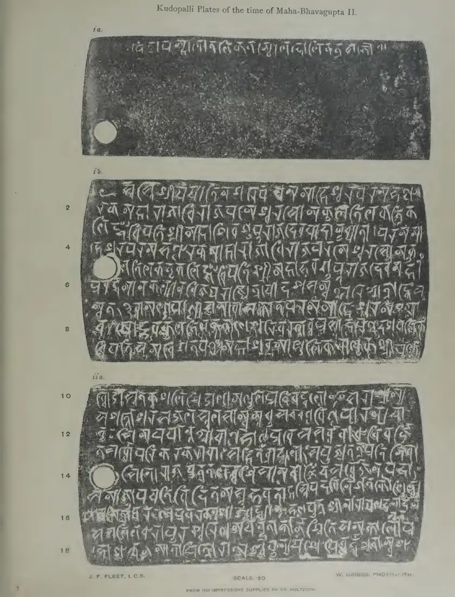
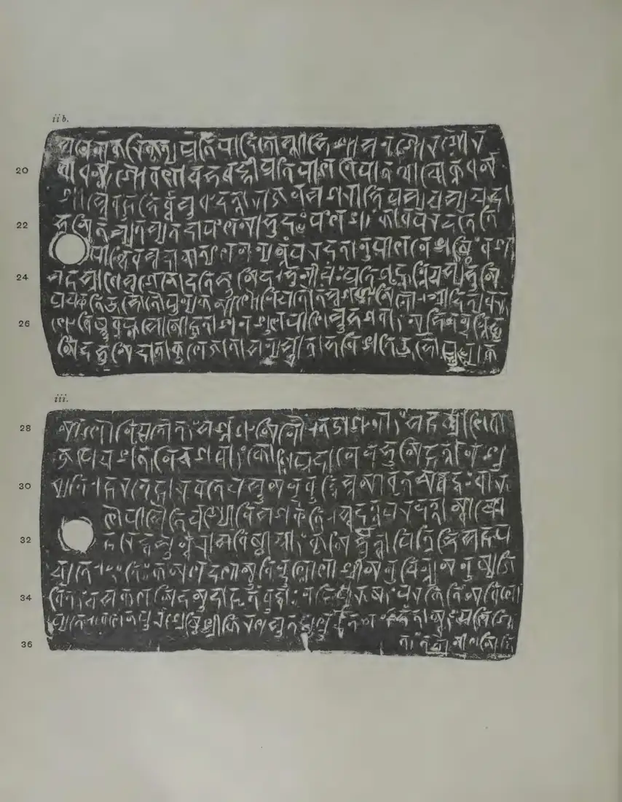

Kudopali plates of the time of Mahā-Bhavagupta II
KUDOPALI PLATES OF THE TIME OF MAHA-BHAVAGUPTA II.
BY F. KIELHORN, PH.D., LL.D., C.I.E.; GÖTTINGEN.
These plates were found, buried in the ground, at the village of “Kudopali” in the Bargarh tahsîl of the Sambalpur district of the Central Provinces, and were, in November 1895, sent to the Central Museum of Nâgpur by Mr. R. A. B. Chapman, I.C.S., Officiating Deputy Commissioner of Sambalpur. I edit the inscription which they contain from excellent impressions, received from Dr. Hultzsch, to whom the plates were lent by the Curator of the Nâgpur Museum, Mr. R. S. Joshi.
1 Karaṇa denotes a writer, scribe, or accountant.
2 The subject of the sentence is Dharmapâladêvah in line 30.
3 Or, perhaps, Nanna-Nârâyaṇa.
4 The word pâdamûla of the original also occurs in line 20 of the plate of Lalitaśûra, where we have bhritya-pâdamûla-bharanâya. Synonymous with it, we have pâdakula in v. 74 of the Sâsbahû temple inscription of Mahîpâla, Ind. Ant. Vol. XV. p. 39. Compare also the Pâli word pâdamûlika, ‘a man servant;’ Játaka, Vol. II. p. 328, l. 13.
5 Of the two words left untranslated, haṭtikâ must be derived from haṭta, ‘a market,’ and may mean ‘market dues.’ Talapâtaka we have, in the form talavâtaka (or talavâtaka) in line 7 of the Dêô-Baraṇârk inscription of Jivitagupta II., Gupta Inscr. p. 216, where the word denotes an official, according to the late Dr. Bhagvanlal Indraji, ‘the village accountant.’ Perhaps the word, as used in the present inscription, is synonymous with or similar in meaning to the term talapada of some Chaulukya grants, which has been taken to denote ‘land paying rent to Government;’ see Ind. Ant. Vol. XI. p. 339.
6 The original, like the Bhâgalpur plate, has here sadaédpachârâh instead of the ordinary sadaédparâdhâh.
7 i.e. payments in kind; the term in the original is pindaka, which seems to take the place here of the ordinary bhâgabhôga. The word pinda occurs, apparently in a different sense, in the phrase vishayâd=uddhritapinda in line 11 of the Madhuban plate of Harsha (Ep. Ind. Vol. I. p. 73) and in line 21 of the Pândukêsvar plate of Lalitaśûra.
These are three copper-plates, each of which measures about long by 4" broad. They are held together by a ring, which had not been cut when the plates reached Dr. Hultzsch. The ring is about thick and in diameter. Its ends are soldered into a seal which bears in high relief a sitting hainsa, facing the proper left and surmounted by a crescent, and, below the hainsa, the legend Ránaka-sré-[Pu]m[ja]. The weight of the plates is 2 lbs. oz., and of the ring and seal oz.; total 2 lbs. 13 oz. The inscription begins on the second side of the first plate and ends on the first side of the third plate; but at the top of the first side of the first plate there is the following additional line of writing, which I do not understand, in characters that closely resemble those of the inscription itself:—
Pémṭṭá(?)pamhálátalikatamvôlabhôlichhatrasatau ||
Though the edges of the plates are only slightly raised into rims, the writing throughout is in an excellent state of preservation. The size of the letters is between and . The characters, which include decimal figures for 1 and 3 in line 7, are Nâgarî, of the northern class. In general, they are similar to those of the inscriptions published above, Vol. III. p. 340 ff., but owing, as it seems to me, to the more cursive style of the writing, they present a rather more modern appearance. The sign of avagraha does not occur. The virâma also, in consequence of the absence of final consonants which will be accounted for below, is nowhere employed; and the sign of visarga is used only six times, three times correctly and three times superfluously. The anusvâra is expressed seven times in the ordinary way, by a superscript circle or dot, and fourteen times by a circle with a nearly vertical line beneath it, written after the akshara to which the anusvâra belongs.1 The only final form of a consonant which occurs is that of m, in -ârttham in line 18. Of individual letters, the initial î is expressed by two circles with (below them) a line drawn downwards either from right to left (in -âddhyâi, l. 16), or from left to right2 (in itih, l. 33); or by a wavy line drawn downwards from right to left, with two circles below it, and below these a slightly curved line drawn downwards from right to left (in Lôisarâ, l. 10, and idam, l. 35). The initial é, which occurs only in pivarddhaé (for vivriddhayé) in line 18, is expressed by a vertical line with (on the left of it) a semicircle open to the left. This form of é, which is very similar to the letter é used in the Cambridge MS. Add. 1691, II.,3 is of essentially the same type as that spoken of by Dr. Fleet, above, Vol. III. p. 332. It occurs, in varying shapes, in a number of inscriptions from eastern India that have all been written some time after the beginning of the 11th century A.D. We find it, e.g., in the word éva in line 14 of the Nadagâm plates of Vajrahasta of Śaka-Samvat 979 (above, p. 189, Plate), in the word ékaikéna in line 17 of the Deopara inscription of Vijayasêna (Ep. Ind. Vol. I. p. 309, Plate), in the word étasya in line 2 of the Kamauli plates of Vaidyadêva of Kâmarûpa (ibid. Vol. II. p. 350, Plate), in the word étâbhyâm in line 24 of the Bâkergañj plate of Kêsavasêna (Jour. Beng. As. Soc. Vol. VII. p. 44, Plate xlv.), in the word éva (not ésha) in line 9 of the Gayâ inscription of Purushôttamasimha (Ind. Ant. Vol. X. p. 342, Plate), in the word éshaḥ in line 10 of the Sylhet plates of Kêsavadêva (Proceedings, Beng. As. Soc. 1880, Plate iv.), and in the word étasya in line 24 of the Sylhet plates of Îsânadêva (ibid. Plate vii. line 8). And, to mention some inscriptions of which no facsimiles have yet been published, it is also used in the Sârnâth inscription of Mahîpâla of Vikrama-Samvat 1083 (Ind. Ant. Vol. XIV. p. 140), in the Gôvindpur inscription of the poet Gangâdhara of Śaka-Samvat 1059 (Ep. Ind. Vol. II. p. 333), in the Assam plates of Vallabhadêva of Śaka-Samvat 1107 (Zeitschr. D. Morg. Ges. Vol. XL. p. 43), and in the Gayâ inscription of Yakshapâla (Ind. Ant. Vol. XVI. p. 64). The particular
1 This sign may be the remnant of a final form of m; but as it is often used before sibilants, there can be no doubt that the writer considered it as an optional form of anusvâra, not as a form of the letter m.
2 This form of î, consisting of two circles with (below them) a line drawn downwards from left to right, is occasionally used in the Khâlimpur plate of Dharmapâla; see above, p. 244.
3 See Prof. Bendall's Catalogue, Table of letters. From that Table it will be seen that the form of é, spoken of above, in the manuscripts has taken the place of the triangular form of é from about the middle of the 12th century A.D.
form of é which we have in the present inscription, in my opinion proves, more convincingly perhaps than is done by anything else, that this inscription cannot have been written earlier than about the first half of the 12th century A.D. Of the consonant-signs, the sign for m, instead of being square-shaped, is much like a right-angled triangle standing on its apex, with a circle placed to the left of, but not joined to, the hypotenuse. And, like the sign for m, the sign for s also in this inscription has altogether lost its square shape; and the forms of both letters, just like the form of é, make it impossible to assign to the inscription any great antiquity. As regards other letters, I would only mention that in the sign for t (or tt) the vertical stroke on the right is generally continued quite to the bottom of the letter (as is also done in the Khâlimpur plate of Dharmapâla), and that no clear distinction is made between t and 'tt.—The language of the inscription is Sanskrit, employed by a person who had no great command of that language, and considerably influenced by his vernacular. The ignorance of the composer is particularly shown by the principal passage of the inscription in lines 7-20, which is confusedly arranged, and in which some necessary words and most of the case-terminations have been omitted. The influence of the Prâkrit is apparent from the dropping of consonants (including visarga) at the end of words, the change of final n to anusvâra, the elision of y between two vowels (in -âddhyâi for -âddhyâyi, i.e. -âddhyâyiné, l. 16, and pivarddhaé for vivriddhayé, l. 18), the substitution of kh for ksh in khitî, l. 17, and of s for shy in bhavišatî,1 l. 27, etc.—As regards orthography, short vowels are frequently used for long ones; the vowel ri and the syllable ri are confounded in Trikaliṅga, l. 5, and pitribhî, l. 32; the letter b is throughout denoted by the sign for v; the dental nasal is seven times used instead of the lingual, and the lingual once (in Kaunđinya, l. 15) instead of the dental; of the sibilants, the palatal is three times employed instead of the lingual (e.g. in varša, l. 23), the lingual once (in vañsha, l. 8) and the dental twice (in pravésa, l. 12, and pásai, l. 31) instead of the palatal; the word datta is several times spelt data; and âmra and tâmra are written âmvra and tâmvra, in lines 11, 18, and 35.—Up to line 20 the text is in prose; lines 21-34 contain some well-known benedictive and imprecatory verses (given here most incorrectly), which profess to be taken from the Dharma-śâstra; and lines 35-36, which are again in prose, give the name of the writer, [Pû]rṇadatta, the son of the Śréshthín Kiraṇa, of Lênapura.
The contents of the prose part of the inscription in lines 1-20 are as follows:—
In the 13th year of the reign of the devout worshipper of Mahêsvara (Šiva), the Paramabhaṭtâraka Mahârájádhirája Paramésvara, the ornament of the Sômakula, the lord of the three Kaliṅgas, the glorious Mahâ-Bhavaguptarâjadêva, who meditates on the feet of the devout worshipper of Mahêsvara (Šiva), the P. M. P., the ornament of the Sômakula, the lord of the three Kaliṅgas, the glorious Mahâ-Šivaguptarâjadêva, (and who resides) at Yayâtinagara,— [his feudatory] the devout worshipper of Mahêsvara (Šiva), who is born in the Maṭhara family and has obtained favour by a boon of (the goddess) Kâlésvarî, the lord of fifteen villages (pallikâ), who has obtained the five mahâśabdas, the Mâṇdalika, Râṇaka, the glorious Puñja (l. 9), the son of Vôdâ (?), after having worshipped the Brâhmaṇas at the village of Lôisarâ in the Giđâṇdâ district (maṇdala), from his residence at Vâ(?)maṇdâpâti (l. 7) issues a command to the Râjaputras, Talavargins(?), Sâmavâjikas, and to all the resident people, to the effect that the said village has by this copper-plate charter been given by him, free from taxes etc., to the Bhaṭtaputra Nârâyaṇa, the son of Janârdana, an immigrant from Hastipada (l. 15), belonging to the Kauṇđinya gôtra, with the pravara of Mitrâvaruṇa,2 and a student of the Kaṇya śâkhâ; and that out of respect for this order and out of respect for religion this grant is to be protected.
1 Bhavišatî, no doubt, will remind the reader of such futures as aṇapešaṅti, vaṇdhišatî, etc., in the Shâhbâzgarhî version of Aśôka's edicts.
2 A member of the Kauṇđinya gôtra ordinarily has the three pravaras Vâsishṭha, Maitrâvaruṇa and Kauṇđinya.
The localities mentioned in the above I have not been able to identify.
Since the Ráṇaka Puñja himself probably was a chief of little importance, the value of the inscription lies in this, that the king Mahâ-Bhavaguptarájadêva, in whose reign it was issued, apparently is the Mahâ-Bhavagupta II. of whom an inscription has been published above, Vol. III. p. 355 ff., and that, on palæographical grounds, as stated above, the inscription cannot be placed earlier than about the first half of the 12th century A.D. The inscription thus fully confirms the conclusion, arrived at by Dr. Fleet in his elaborate paper, ibid. p. 323 ff., according to which Mahâ-Bhavagupta II. and his three predecessors belong to about the 11th, and not to the 5th or 6th century A.D.
Dr. Fleet, ibid. p. 333, has referred to an attempt that has been made to identify the great-grandfather of Mahâ-Bhavagupta II., Śivagupta, with a Śivagupta of whom we have an inscription at Sirpur, and to establish a certain connection between these princes and the so-called Kêsari dynasty of Orissa. While agreeing with all that Dr. Fleet has said on the subject, I may perhaps mention here that, by a curious coincidence, in the family of the Śivagupta of the Sirpur inscription there was a chief or king, one of whose names did end in the word kêsarin. The Sirpur inscription, edited by me in the Ind. Ant. Vol. XVIII. p. 179 ff., gives the following genealogy: Udayana, of the family of the Moon; his son Indrabala; his son Nannadêva; his son Chandragupta; his son Harshagupta; his son Śivagupta-Bâlârjuna. And of these chiefs the Râjim copper-plate inscription, edited by Dr. Fleet in Gupta Inscr. p. 291 ff., mentions Indrabala and his son Nannadêva of the Pâṇḍu vaṁśa; and it gives besides the name of Nannadêva's son (not, I think, his adopted son) Mahâśiva-Tívaradêva. Now in the Nâgpur Museum there is a large fragmentary inscription,1 of which a very faulty account with a rough lithograph has been published in the Jour. Bo. As. Soc. Vol. I. p. 148 ff. This inscription, in line 3, mentions a king Sûryaghôsha,2 and up to the middle of line 7 relates that he (or a descendant of his whose name may have disappeared), when his son was killed by a fall from the top of the palace, founded a temple or other building connected with the Buddhist religion. It then records, in line 7, that after the lapse of much time another king, named Udayana, was born from the Pâṇḍava vaṁśa;3 and it evidently stated that this Udayana, who no doubt is the Udayana of the Sirpur inscription,4 had four sons. The names of the three first sons are broken away, but from a verse in line 8, which contains a play on the word bala and compares one of the younger sons to Vishṇu (the younger brother of Indra), I conclude that the eldest son was Indrabala. The name of the fourth son was Bhavadêva. Of him it is stated, in line 9, that he was a lion in battle, raṇakêsarin,5 and the name Raṇakêsarin is actually given to him in line 13 (sa śrîmân=Raṇakêsarî vijayatâîn). And line 14 further records that he also bore the name Chintâdurga.6 Bhavadêva-Raṇakêsarin repaired the building which has been mentioned before, and the inscription, which was composed by Bhâskarabhatṭa, was put up during his reign.— Although Bhavadêva's inscription, in its present state, contains no date, it may, on account of the writing which is similar to, but somewhat older than, that of the
1 I owe impressions of the inscription to Dr. Burgess, Dr. Fleet, and Dr. Hultzsch. The inscription contains 20 lines of writing, which cover a space of about 4' 5" long by 1' 10½" high. At the end of each line about 30 aksharas are broken away, and the two last lines are more or less illegible.
2 The inscription does not say that Sûryaghôsha was 'the sovereign lord of Urîśi (Orissa).'
3 Gachchhati bhúyasi kâlê bhûmipatiḥ kshapita-sakalaripupakshaḥ | Pâ[nḍa]va-vaṁédd=guṇavîn=Udayana-nâmâ samutpannaḥ ||
4 The same Udayana is also mentioned as a king of the past in line 1 of the Kâlañjar inscription of which a photo-lithograph is given in Archæol. Surv. of India, Vol. XXI. Plate ix. L. (Udayana iti râjá yaḥ kulê l'dṇḍavândâm sakala-bhuvana-nâthasy=ásya Bhadrêvarasya | pavana-lulita;chihnaâm ramyakânt-îshṭakâbhir=griha-varam=atibhaktyâ kâritaâm têna pûrvvaâm ||).
5 Kripâṇa-nakharêṇ=ásu vikramya dalayan=raṇê | abhavad=vairi-mattêbhân=sa ékó raṇa-kêsarî ||
6 Janayati éatrushu chintâm yó vai durggaé=cha saṅgarê yasmât | têna raṇa-ghasmaró=sau Chin[tâd]urgg-dkhyatâm=agamat ||
Kaṇaswa inscription of Śivagaṇa,1 confidently be assigned to the beginning of the 8th century A.D.; and it thus tends to prove that the Râjim copper-plate inscription of Mahâśiva-Tivaradêva undoubtedly belongs to about the middle of the 8th, and the Sirpur inscription to about the beginning of the 9th century A.D.2
TEXT.3
First Plate; Second Side.
1 Ôm4 svasti [||*] Śrī-Yayâtinagarê 5paramamâhêsvara-paramabhattâ-
2 raka-mahârâjâdhir â ja - p a [ r a * ] m ê s v a r a - Sô m a k u l a t i l a k a - Tr i k a -
3 lingâdhipati-śrī-Mahâ-Śivaguptarâja d ê v a - p â d â n u d h y â t a 6- p a r a m a m â -
4 hêś[v]ara-paramabhattâraka-mâ(ma)hârâjâdhi r â ja - p a r a m ê s v a r a - Sô m a k u -
5 latilaka-Tri(tri)kalingâdhipati-śrī-Ma h â - B h a v a g u p t a r â j a d ê v a - m a h î -
6 pravarddhamâna-kalyâna(ṇa)vijayarâjyê trayôdaśa-samvatsarê7 âtr=âñkê sa-
7 mvata 138 9Vâ(?)maṇdâpâtti(tī)-samâvâsakâta10 paramamâhêsvara-Maṭhara-
8 vainshô(śô)dbhava-kulatilaka11-K[â]lêsvari(rī)12varalavdha(bdha)prasâda-pañchadaśapallikâ-
9 dhipati-samadhigatapañchamahâśavda(bda)-mâṇdalika- r â n a k a - s r î - P u n j a ( ? ) 13
Second Plate; First Side.
10 14Vô(?)dâ-suta[h*] kuśali(lī) Giṇâṇdâ-maṇdala-prativa(ba)ddha-Lôisarâ-grâmya15
11 sa-gartt-ôśara sa-jala-sthala s-âmvra-madhu sa-[vâ?] tṭa-viṭtap-âranya châ-
12 tuḥ-sima-paryânta â-châṭṭa-bhâṭa-pravêsa sarvva-vâdhâ-vivarji-
13 ta sarvv-ôparikara-kar-âvâṇ-sahita vrâhmaṇâm sampujya tatra pratinivâ-
14 sinô râjaputra-talavargi-sâmavâji16 cha sarvvê janapadâm
15 samâjñâpayati viditam=astu bhavatâm Hastipada-vinirgata17 Kauṇdinya(nya)-
16 gôtra18 Mitrâvva(va)ruṇa-pravara19 Kanva(ṇva)-sâkh-âddhyâi20 bhatṭaputra-śrī-
Nârâyaṇa21 Da(ja)nârdana-suta22
1 See Ind. Ant. Vol. XIX. p. 57, Plate.
2 The Boramdeo inscription, of which a lithograph is given in Archæol. Surv. of India, Vol. XVII. Plate xx. E., speaks of Bâlârjuna (i.e. the Śivagupta of the Sirpur inscription) as a king of the past.
3 From impressions supplied by Dr. Hultzsch.
4 Expressed by a symbol.
5 Originally pamamao was engraved.
6 Originally âdhyâtâ | paramao was engraved.
7 Read -samvatsarê=tr=âñkê samvat.
8 From here to the end of line 9 the writing seems to have been engraved over a cancelled passage.
9 Read Vâmaṇdâo (?); below, vv is three times written instead of v, in talavvargi, l. 14, Mitrâvvaruṇa, l. 16, and pivvarddhaê, l. 18; compare also Vôdâ, l. 10.
10 Read -samâvâsakât, for -samâvâsât or -vâsakât.
11 One would have expected only either Maṭharavamśôdbhava- or Maṭhara kulatilaka-.
12 The actual reading may possibly be Kulêsvari*.
13 Read -Puñjô.
14 Read Vôdâ- (?); see above, note 9.
15 From here the arrangement and the details of the text are quite incorrect. What the writer meant to say, would be about this:—Lôisarâ-grâmê brâhmaṇân=sampújya tatra pratinivâsinô râjaputra-talavargi(?). sâmavâji[k-âdîn=] sarvâñ=janapadân=samâjñâpayati | Viditam=astu bhavatâm [yath=âyam grâmaḥ] sa-gart-ôśharaḥ sa-jala-sthalaḥ s-âmra-madhûkaḥ sa-vâṭa-viṭtap-âranyaś=chatuh-stmâ-paryantô=châṭa-bhaṭa-pravêśaḥ sarvṇ-vâdhâ-vivarjitaḥ sarv-ôparikara-kar-âddna-sahitô Hastipada.
16 Originally talavvargi was engraved, but the upper v of the akshara vva has been struck out. The word talavargi[n] I have not met with elsewhere; sâmavâjika actually occurs in line 11 of the Gañjâm plates of Prīthivivarmadêva, above, p. 200; and the Katak plates of Mahâ-Śivagupta in line 27 apparently read talahi(?)ta-sâmavâyika, where sâmavâyika probably is the original of sâmavâjika; see above, Vol. III. p. 352, and Plate x. in Jour. Beng. As. Soc. Vol. XLVI. Part I.
17 Read -vinirgatâya.
18 Read -gôtrâya.
19 Read -pravarâya.
20 Read -âddhyâyinê.
21 Read yaṇâya.
22 The word suta is engraved below the line; read -sutâya.
Plate 1 is bound after this page.
Plate 2 is bound after this page.
17 1sasaliladhârâ-puraścharênam=a-chandra - t â r k - â r k a - k h i t i - s a m a k â l - ô p a -
18 bhôg-ârttham mâtâpitrôr=âtma[na*]ś=cha punya(nya)-yasô-pivarddhaê2 tâmvra-sâ-
Second Plate; Second Side.
19 sanên=âkari(rî)kritya pratipâditô=smâbhi[h*] sâsana-gauragaura-3
20 vâ dharmma-gauvanâ cha bhavadbhî pratipâlanipâ [||*] Tathâ ch=ôktam dharma-
21 sâstrê [|*] 4Vahubhir=vvasudhâ dattâ râjana Sagar-â[di*]bhi yasya yasya yadâ
22 bh[u]mi tasya tasya tadâ phala [||*] Mâ bhud=ah phala-šamkâ va5 para-dat=éti
23 pârthiva sva-dânât=phalam=anyantain6 paradat-ânupâlanê [||*] Śashthirin varsâ-
24 sahasrâni svargê [m]ôdati bhumi-da7 |(||) Bhumî yah pratigrihnanti yasya bhumi
25 prayachhati ubhau tau punya-karmânau niyatautain8 svarga-[gâ]minau |(||) Âditya
Varu-
26 nô Vishnu Vrahma Sômô Hutâsana Śulapânis=tu bhagavâim=abhinandanti bhu-
27 mida [||*] 9Bhumi-dâtâ kulê jâtâ sa nyas=trâtâ bhavišati [||*] Ubhau10 punya-ka-
Third Plate; First Side.
28 rmânau niyatautain sargga-gâminau |(||) Tađâgânâm sahasrâni vâ-
29 japêya-šatâni cha gavâm kôtti-pradânêna bhumi-harttâ na śu-
30 dhyati |(||) Haratê hâravatê yas=tu manda-vuddhis=tamâ-vrita sa vaddhaḥ Vâru-
31 nai pâsai tiryagyôni sa gachhati |(||) Sva-datta para-dattâm=vâ y-
32 harêd=vasundharâ sa vishthâyâm krimir=bhutvâ pitribhi saha pa-
33 chyatê |(||) Itiḥ kamaladal-âmvuvindu-lôlâ srîm=anuchintya manushya-ji-
34 vitam cha sakalam=idam=udâhritam vuddhâh na hi purusham para-kirtima vilô-
35 pyatê || || Lênapura-śrêshthi-śrî-Kiraṇa-suta-[Pû]rnṇadat[ê]na idam11 tâmvram yalikhi-
36 tain tat=pramânam=iti [||*]
1 Read saliladhârâ-puraḥsaram=â-chandra=târak-ârka-kshiti.
2 Originally pivvarddhaê was engraved, but the lower v of the akshara vva is struck out. Read -vivriddhayê tâmra-.
3 Read śâsana-gauravâd=dharmma-gauravâch=cha bhavadbhiḥ paripâlantyaḥ.
4 I consider it superfluous to correct the numerous errors in the following verses; the verses all occur in the copper-plates published above, Vol. III. p. 340 ff.
5 This is meant for mâ bhûd=vaḥ phala-šankâ vâ; see the Gañjâm plates of Prithivivarmadêva, above, p. 201, 27.
6 Read =ânântyam.
7 The second half of this verse has been omitted.
8 Read niyatam.
9 The first half of this verse has been omitted.
10 This is the second half of the verse in lines 24-25.
11 Originally ibham was engraved; read °dattên=êdam tâmram likhitam.

